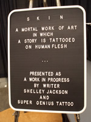
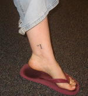
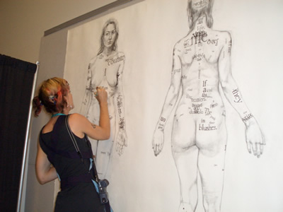

|
Written on the Body:
An Interview with Shelley Jackson
by Scott Rettberg
alternate format- interview .pdf Shelley Jackson is the author of the short story collection The Melancholy of Anatomy, the hypertext classic Patchwork Girl, several children¹s books, and Skin, a story published in tattoos on the skin of 2095 volunteers. Her first novel Half Life is forthcoming from HarperCollins. She lives in Brooklyn, NY and teaches at the New School. Her website:
<http://www.ineradicablestain.com>.
Scott Rettberg: Although you've written literary work and created art in many different platforms, ranging from drawings to Storyspace hypertext to webworks and print fiction, certain themes and obsessions recur across your body of work. In many of your projects there seems to be a fascination with the space of the body, and in particular with the relationship of the body to consciousness. As I think about Patchwork Girl, My Body--a Wunderkammer, and your collection The Melancholy of Anatomy in particular, I see a consistent fascination with the body as other, as if each organ, fluid, and membrane in our bodies have not only their own functions but their own agendas or even consciousness as well. Could you describe the root of your fascination with bodies and their constituent parts? As you think about your work over the last fifteen years or so, do you see a kind of evolution in your view of the body?
Shelley Jackson: I continue to be amazed that I exist. Or that I seem to; the question is not settled to my satisfaction. It seems highly unlikely that what asks the question is made of matter, grey or not. The very fact our matter thinks makes its credentials as matter suspect. Maybe, like Samuel Johnson, I need to kick something to prove it exists. The problem is that what I am trying to kick is my own kicking foot. The hard and durable thing (Johnson's rock) seems to set and satisfy its own criteria for existence. You could almost say my criterion for existence is otherness: if it does not think or feel, but is the object of thought and feeling, it exists. Fortunately, existence rubs off. I feel more real when I bump up against things and in this way become a thing for those things--the world's world, another's other. But this requires a bizarre imaginative excursion: myself as mud might see me, or water, or ink.
I am feeling my way through some sort of impossible topological figure here, probably a Klein bottle, to explain the outside-inness of my sense of self, but there are other ways to put it. Let's see if this is simpler: there are some parts of me that are permanently unknowable, and one of those things is the very basis of knowing: the body. The mind relies upon something it cannot think, and conversely, the body relies upon something it cannot touch. I'm fascinated with the sticky stretch between matter and sense, both in us and in language. From Patchwork Girl to my forthcoming novel Half Life, that fascination hasn't changed, but there has been a general movement from the figurative to the literal. The embodied, itinerant word of Patchwork Girl has become actual living flesh in Skin. The text is not compared to a monstrously aggregate body; it actually is one.
SR: Jay David Bolter titled his early study of electronic textuality Writing Space, in part because he was interested in "spatial" or "topographic" writing. Starting with Patchwork Girl, your work has explored the material properties of different types of writing spaces: Patchwork Girl probably makes more extensive use of the spatial properties of Storyspace software than any of the other well-known hypertext fictions, My Body and The Doll Games each used different types of visual metaphors on the web, and the Skin project actually lets "words" loose out into the physical world. Could you discuss your view of the relationship of writing to both virtual and physical space?
SJ: I think what I have is less a "view" than a feeling, a sort of itch. I feel that language has a relationship to my body, and I want to make that relationship more literal. Spatializing text makes it more like a body, or an environment for my body, or both, which gives me something to scratch my itch on. Coming from the other direction, I think literal bodies and spaces can strain toward a wordless sort of syntax or story. I love that stretch, and the gap that never quite closes between thingly word and wordy thing.
SR: You've done work as an electronic writer, a print novelist, an illustrator, a performance artist and, perhaps, as a conceptual artist. In doing so, you're a true "multimedia author," crossing boundaries not only of media, but also of cultures and practices. Could you discuss some of the differences between the various cultures you inhabit as a writer and as an artist?
SJ: All these disciplines are weakened by ignorance of one another. In the early days of electronic literature, claims for its revolutionary potential were weakened by ignorance of the long tradition of multilinear, multimedia work in print. Print culture--I'm speaking of the American literary mainstream, not academia or the experimental underground--is no less ignorant of that tradition, and dismisses canon-breaking work as either pretentious esoterica or as falling outside the category of literature altogether, into "art"--where, by implication, anything goes. That judgement only demonstrates literature's towering ignorance of the specific rigors of the art world, of course, but it is true that a much broader range of approaches is not just tolerated but welcomed under the rubric of art. But artists who use text are often ignorant of precedents in the literary arts, and their writing suffers from too little reading. When I wrote Patchwork Girl, it seemed to me I was arguing nothing especially new: the idea that marriages across boundaries of all kinds should and would be made seemed obvious to me. I thought I was just one mutt among many. Now, well, not that I'm claiming to be special, but I am realizing finally that it's harder than I thought to make these weddings, and all the more necessary for that reason.
SR: Could you discuss in general terms the evolution of the Skin project? Did the reception the project received surprise you?
SJ: When I was working on my story collection, The Melancholy of Anatomy, I began a story called "Skin." It didn't satisfy me, though, so I never finished it. Later, driving across country on my book tour in the spring of 2002, I had a seemingly unrelated idea: I would publish a story "on America." Every time I pulled off the highway, I'd scratch a word on a rock or tree trunk, leaf or fencepost. I planned to take pictures of the words and post them online along with maps and elaborate driving directions, so that readers could visualize for themselves the way the words arranged themselves in space across the American landscape. An ambitious reader could follow my tracks and try to read the story that way, though I didn't anticipate anyone actually doing it--I thought just raising the possibility was interesting enough. I never did it, but the idea stuck in my mind. And I loved the idea of my words existing not in neat rows on a page but in meadows dotted with rabbit pellets, on dusty, desolate rest-stops, under buzzing fluorescent lights outside cheap motels. I never did this piece, but the idea and other like it lingered in my mind. I was reminded of it when I saw a documentary on Andy Goldsworthy, the artist who constructs fleeting on-site sculptures out of grass, icicles, pebbles. Last spring, while thinking about how much I liked forms that reflected their content, I thought of my unfinished story "Skin," and suddenly it suddenly occurred to me that there is a kind of "publishing" we already do on skin: tattooing. The idea of publishing a story on volunteers, one word at a time, was only a few mental leaps away. The whole concept of the Skin project leapt into my mind in that moment. I put out a call for participants in summer of 2003.
Initially, I thought Skin might be a conceptual art conceit, never to be realized. In my initial call for participants I wrote: "If no participants come forward, this call itself is the work." When the first volunteers wrote me, I was astonished. Since then, I've received over ten thousand emails. It has completely changed my understanding of my work, my audience, and even, I must admit, myself. The world called my bluff, and I'm grateful, though I may never fully regain my composure.
SR: When you visited Stockton to give a reading last year, one of your "words" showed up. She seemed to worship you with an almost acolyte-like veneration. It occurred to me that the relationship you have with the people who have had one of your words carved in their flesh must be quite a bit different from the relationship that most authors have with readers, even dedicated fans. These people will literally remember you until the day they die. Does that feel at all strange to you? In some ways I imagine it could be frightening.
SJ: The existence of the author is a necessary flaw in this (every?) story. But this project makes me keenly aware that I am not the only, or even always the dominant voice in it. I recently took great pleasure in watching three "words" coach a fourth, nascent word through her first tattoo: "Have you eaten anything? Here, have this apple. Do you want us to hold your hand?" My presence was a comfortable irrelevancy to them at that moment. Furthermore, my story is being rewritten, one word at a time, by my participants. As my words enter the specific contexts of their lives, they change forever. In the end, 2095 other people will have signed their names to my story.
SR: One interesting aspect of the contract that you make with the participants in the Skin project is that you've committed to share the whole text of the story only with people who participate as words, so the story will never be published conventionally. With that in mind, do you however envision the project ending with the last tattoo? Or will the project have other manifestations?
SJ: I was quite serious when I called this a Mortal Work of Art. As words die, the story gradually changes; it's possible that the first word will die before the last one has been published, meaning that no complete version will ever appear. But I consider each version of the story legitimate; each successively shorter version of the story that will be created by these deaths is the story too, right down to the one-word story that will be its final printed form. If all my words hold to their promise not to share the story, that will truly be the end. The work includes its own disappearance in its aesthetic project, so it is not complete until it is gone. However, like all living things, each "word" has a complex destiny of his or her own, affecting many other lives, and I consider that part of my project too. When I die, the destiny of the project will fall into the hands of the remaining words, who might decide, who knows, to do something different with it than I intended! Some people have asked if they could will their words to their children, creating a second-generation story.
SR: Skin is a project that crosses the boundary between a "work" of literature and the kind of performance art happenings and intermedia advocated by people like Allan Kaprow and Dick Higgins in the 1960s. As you developed this project and others, do you think in the context of both literary and performance art traditions? Could you discuss your influences?
SJ: I think more about literature than art, not just because I love it, but because it needs me more. I want to force its borders open, and so I call myself a writer, and will probably keep on doing so even as I get further and further from what most people would call writing. Because literature is so tightly circumscribed, one can import just about any question from conceptual or performance art and get something new in response: What if we redefine the work to focus on the means of distribution? The reader? The "happening" that is reading? Interruptions or failures of reading: pages stuck together, erasures, typos? The blanks between words? The passages you skip? The context surrounding a reading: a particular chair, a smell, sounds, light, snack? The process of circulation? The material support? The decay, dispersal, disappearance of the material support? What if we focus not on the denotative qualities of language but on its mouth feel? The taste of ink? The properties of paper? And so on.
SR: Could you discuss the Interstitial Library project? What drives your interest in the project? Are people participating in it?
SJ: Increasingly, I define writing to include, not just the text itself, or the printed book as object, but the whole life of that text--printing, distribution, circulation, reading, rereading, quotation, misquotation, and perhaps eventual disappearance. The Interstitial Library, an ongoing collaboration with artist Christine Hill (and eventually many others) aims to investigate, chronicle and celebrate this life. The Library is a siteless book collection curated by volunteers briefed in a theatrical training session, who are invited to go out into the city and slip book cards into their selections--books left on the street, in junk shops, in bookstores, in other libraries--and leave them there for others to find. The library catalogues attributes (e.g. smell, marginal scribblings, living inhabitants) disallowed by regular libraries. The database will evolve from contributors' input a sort of synaptic map of the reading public, as well as a sort of road map of the itinerant word.
SR: You've published a book of short fiction with a major press, you have a well-known New York literary agent, and you're finishing a novel that I expect will also be published by a major press. You have more of a foot in the conventional New York publishing scene than most other electronic writers. How do the people you work with in conventional publishing regard your experiments in new media writing and public art? Do they consider it a distraction from your "real" work as a fiction writer? Have they expressed any interest in developing or growing an audience for the type of work you do in electronic media?
SJ: For the first couple of years after my first appearance in print most publishers (and most writers too) seemed to view my new media work as irrelevant at best, and embarrassing at worst. Now that the dot.com hyperbole has died down, and electronic media have not only not gone away, but gained a larger and larger audience, the younger editors seem cautiously approving of my work outside publishing. They still seem to view it only as potential publicity, though, out of their sphere and decidedly secondary to it.
SR: In your TIR Web interview with Rita Raley a few years back, you said that you didn't think you had yet achieved "the kind of gooey intermingling" you envisioned between image and text. You said then that you had "other projects in mind that would mix art forms very insistently." Was Skin the type of project you had in mind?
SJ: I was probably thinking of a work in progress, The Shelley Jackson Vocational School for Ghost Speakers and Hearing-Mouth Children. It's a fictional school that comprises text, "scientific" illustrations, maps, photography, wax sculpture, paper crafts, performance and homework assignments.
SR: Does your new novel expand on any of the themes you've been developing in your other work? Could you tell us a bit about the book? Any news on its publication?
SJ: Half Life is narrated by one of a pair of conjoined twins, in a looking-glass America where "twofers" form a significant cultural minority with its own subculture, style, and self-help books. Nora, my narrator, is trying to lay claim to what she considers her birthright, the first person pronoun, and her twin is in the way. Unless maybe she is the way. Conjoined twins strain the very grammar we use to speak of how they strain the grammar that we use to speak of, etc. Who exactly is the "first person"? Who's writing this book? It will be obvious that I'm still stuck on language, the body, and the ambiguous boundaries of the (monstrous) self.

Half Life will be published by HarperCollins in summer of 2006.
Photos by Scott Rettberg and Andy Smull. |